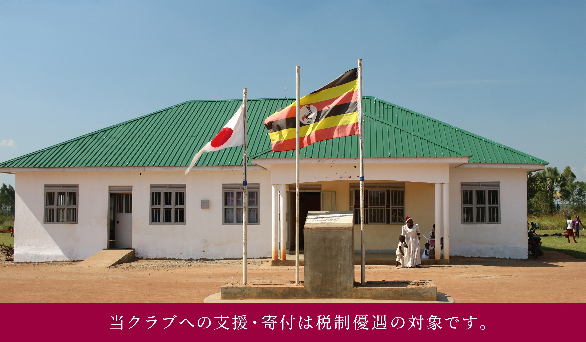
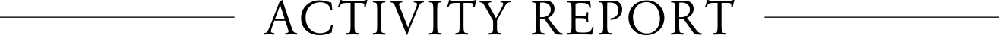
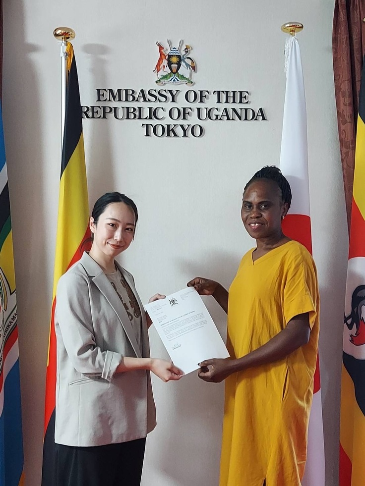
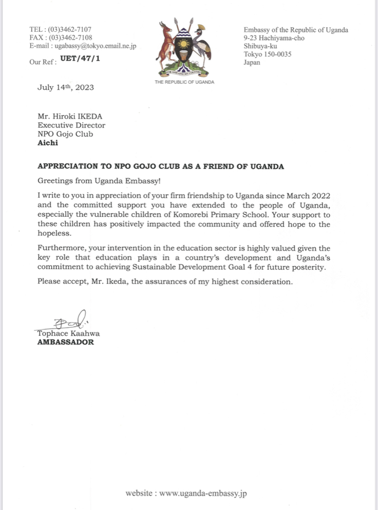
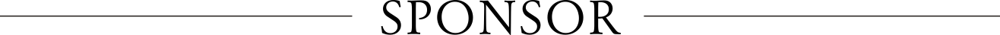
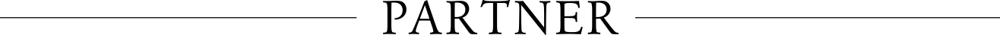
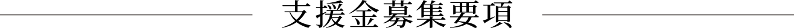
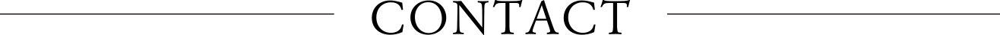

認定NPO法人五条クラブは、日本や発展途上国で、
教育・スポーツ・文化に関わる活動や支援を行っています。
子どもたちが持つ可能性を、教育とスポーツの力で育みながら、
生涯にわたる学びやスポーツの広がりを大切にしています。
こうした取り組みを通じて、人と人とがつながり、
社会に平和が根づいていくことを目指しています。



本クラブの学校づくりがウガンダ共和国の教育資質向上に多大な貢献をしたことを認めていただきました。KOMOREBI事業は在日ウガンダ大使館の後援を受けて実施しています。
その他の活動はこちらからご覧ください。




わたしたち認定NPO法人五条クラブは、世界の子どもたちのために教育と
スポーツの環境を整備して、将来を担える若者の育成を目標としています。
ウガンダ共和国・ネパール連邦民主共和国への支援に加えて、国内外の
災害復興支援等の活動も継続しており、今後も多くの皆様のご協力を
必要としています。何卒ご支援を賜りますようお願い申し上げます。
下記よりお申込みをいただけますと幸甚です。
個人情報の取り扱いについて寄付の管理・領収書発行・連絡業務以外の
使用はいたしません。ご理解ご協力のほどよろしくお願い申し上げます。

認定NPO法人五条クラブ
〒452-0943